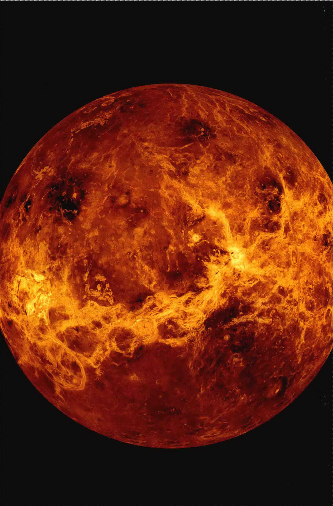
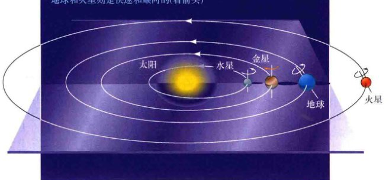
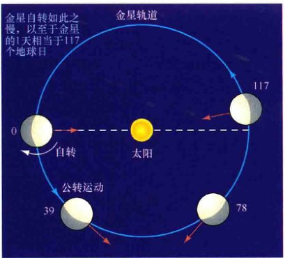
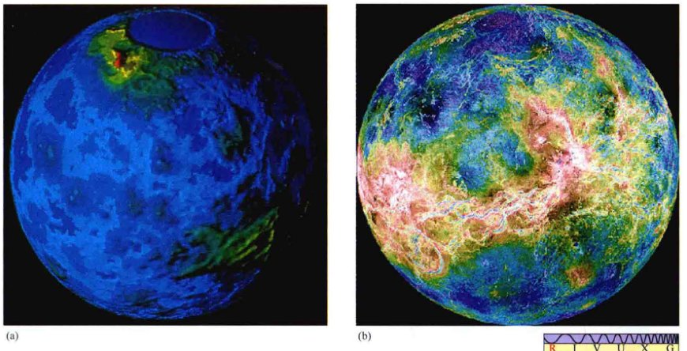
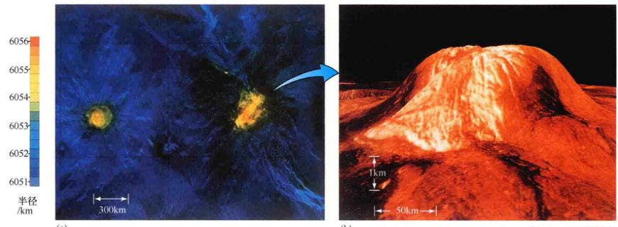
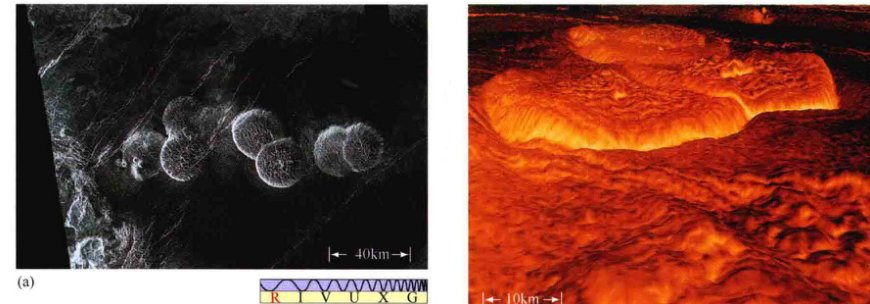
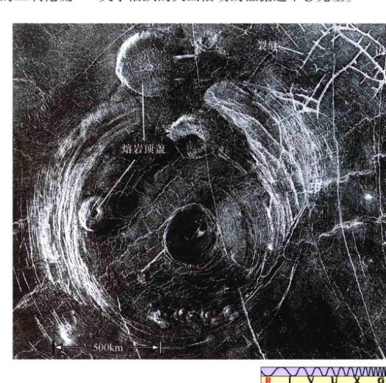
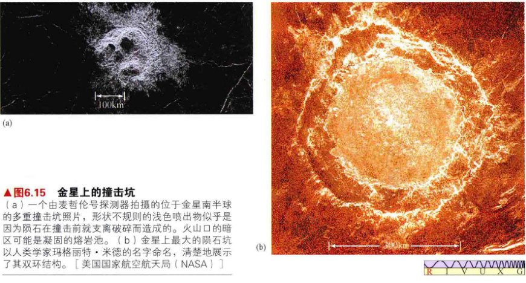
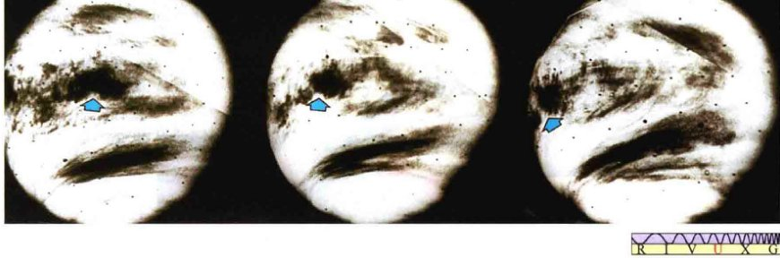

<style>
    /* 基础样式：沉浸式阅读体验 */
    body { 
        font-family: -apple-system, BlinkMacSystemFont, "Segoe UI", Roboto, "Helvetica Neue", Arial, sans-serif; 
        line-height: 1.8; 
        color: #333;
        max-width: 800px; 
        margin: 0 auto; 
        padding: 40px 20px; 
        background-color: #fff;
    }

    /* 章节单元 */
    .chapter-unit { margin-bottom: 60px; }

    /* 标题体系 */
    h1 { font-size: 2.5em; color: #c0392b; border-bottom: 3px solid #e74c3c; padding-bottom: 15px; margin-top: 0; margin-bottom: 30px; }
    h2 { font-size: 1.8em; color: #a93226; margin-top: 50px; border-left: 5px solid #e74c3c; padding-left: 15px; }
    h3 { font-size: 1.4em; color: #d35400; margin-top: 35px; font-weight: 600; }
    
    /* 正文 */
    p { margin-bottom: 1.5em; text-align: justify; text-justify: inter-ideograph; }
    strong { color: #c0392b; font-weight: 700; }

    /* 特殊区域 */
    .sidebar { 
        background: #fdf2e9; 
        padding: 25px; 
        border-left: 5px solid #d35400; 
        margin: 30px 0; 
        border-radius: 0 8px 8px 0; 
        box-shadow: 2px 2px 10px rgba(0,0,0,0.05);
    }
    .sidebar-title { font-weight: bold; color: #d35400; font-size: 1.1em; margin-bottom: 10px; display: block; }

    .concept-check {
        background-color: #e8f8f5;
        border: 1px solid #d1f2eb;
        padding: 15px;
        margin: 20px 0;
        border-radius: 8px;
        color: #16a085;
    }
    .concept-check::before { content: "✅ 概念理解检查"; display: block; font-weight: bold; margin-bottom: 5px; }

    .ultimate-question {
        background-color: #2c3e50;
        color: #fff;
        padding: 25px;
        margin: 40px 0;
        border-radius: 8px;
    }
    .ultimate-question h3 { color: #f1c40f; margin-top: 0; border-bottom: 1px solid #5d6d7e; padding-bottom: 10px;}

    /* 习题区域 */
    .exercises { background: #fffcf0; padding: 30px; margin: 50px 0; border: 1px solid #f0e6d2; border-radius: 8px; }
    .question-list { padding-left: 20px; }
    .question-list li { margin-bottom: 15px; }
    
    /* 图片占位符 */
    .image-placeholder { 
        background: #f8f9fa; border: 1px solid #dee2e6; 
        display: flex; flex-direction: column; align-items: center; justify-content: center;
        margin: 30px auto 10px auto; 
        color: #6c757d; font-family: monospace; font-size: 0.8em;
        position: relative;
        overflow: hidden;
    }
    .image-placeholder::before { 
        content: "🖼️ Image Area " attr(data-bbox); 
        margin-bottom: 10px;
    }
    .caption { 
        font-size: 0.9em; 
        color: #555; 
        text-align: center; 
        margin-bottom: 40px; 
        line-height: 1.4;
        padding: 0 10%;
        font-style: italic;
    }
    .caption strong { color: #c0392b; font-style: normal; }

    /* 列表与引用 */
    ul, ol { margin-bottom: 1.5em; }
    li { margin-bottom: 0.5em; }
    sup { font-size: 0.75em; vertical-align: super; }
</style>
<article class="chapter-unit">

<h1>第9章 金星：地球的姐妹行星</h1>
<aside class="sidebar">
<span class="sidebar-title">学习目标</span>
<p>本章的学习将使你能够：</p>
<ul>
<li>总结金星的轨道和物理性质。</li>
<li>描述金星大气的特点，将它与地球大气对比。</li>
<li>将金星表面和地质的大尺度特征与地球和月球进行比较。</li>
<li>展示金星上持续火山活动的证据。</li>
<li>解释为什么金星上的温室效应产生了非常不同于地球上的环境。</li>
<li>描述金星的磁场和内部结构。</li>
</ul>
</aside>
<p>金星似乎是我们自己行星的副本。这两颗行星的大小、密度和化学成分相似；它们的轨道距离太阳的远近差不太远；在形成时，它们没有太明显的区别。然而，现在它们是不同的两个类地行星。地球是一个充满活力的世界，充满了生命；金星是一颗不适合人类居住的烈焰地狱，有着密集、高温的大气，主要是二氧化碳，没有任何一丝的氧气和水。</p>
<p>沿着各自的演化路径，在某处，金星和地球发生了分歧，并且是从根本上发生了分歧。这是怎么发生的？是什么因素导致金星目前的状况？为什么金星的表面、大气和内部结构与地球是如此不同？在回答这些问题时，我们会发现，行星的环境及其成分，在决定其未来方面会起到关键作用。</p>
<aside class="sidebar">
<span class="sidebar-title">知识全景</span>
<p>地球和金星在形成初期大致相同，但结局却非常不同。相同的物理过程，让我们的地球温暖、舒适、宜居，却把我们的姐妹行星变成了难以想象的地狱。天文学不是一个实践性很强的学科，但在这里我们却对此非常感兴趣——我们想知道为什么金星变得如此之热。通过探寻这两个大小相似的天体的历史，天文学家试图了解金星和地球变得如此不同的原因——我们在太空中的家园有一天是否会发生类似的气候灾难。</p>
</aside>
<h2>9.1 轨道性质</h2>
<p>金星是距离太阳第二远的行星。它的轨道位于地球内侧，所以金星与水星类似，只能在天空中比较接近太阳的地方被找到——我们的姐妹行星从来不会离开太阳超过47°。由于地球的自转速度为15°/h，这意味着金星总是在日出之前或日落之后可见，在地平线以上的时间最多只有3h。因为我们在地球上看到的金星只出现在日出之前或日落之后，所以金星通常被称为“启明星”或“长庚星”，这取决于它位于轨道上的什么位置。</p>

<div class="caption">
<strong>图9.1 日落时的金星</strong><br/>
        月亮和金星在日落后位于西方的天空中。金星显得光芒夺目，亮度超过天空中最亮的恒星。[J.谢德(J.Schad) / 照片研究有限公司 (Photo Researchers, Inc.)]
    </div>
<p>金星是整个天空中第三亮的天体，仅次于太阳和月亮。它差不多比最亮的恒星天狼星亮10倍。如果你知道它的位置的话，即使在白天，你都可以看到金星。在一个没有月亮的夜晚，远离城市灯光，金星可以照出淡淡的影子。这颗行星的亮度源于金星有很高的反射率这一事实。到达金星的阳光有近70%被反射回太空（作为比较，水星和月球在这种情况下的反射率大约为10%），其中大部分阳光被金星大气中的高云所反射。</p>
<p>我们可能认为，金星处于“圆满”状态时是最亮时——也就是说，那时我们可以看到金星整个被阳光照亮的表面。然而，因为金星轨道在地球和太阳之间，所以金星处于“圆满”时，它距离我们最远——距我们1.7 AU，并且位于太阳的另一侧。回想一下第2章，这样的对准被称为上合日，“合”表明两个天体在天空中非常靠近。</p>
<p>当金星离我们最近时，这颗行星处于“新相”阶段，位于地球和太阳之间（下合日），我们无法看到它，因为此时被阳光照亮的表面背对我们，只剩下一个发光的薄环环绕着金星，这是由金星的大气折射阳光造成的。随着金星逐渐离开下合，越来越多的金星表面变得可见，但它离我们的距离也持续增加。从地球上看，金星的最大亮度实际出现在最接近我们的星球之前或之后的36天左右。此时，金星离太阳约39°，距离地球约0.47 AU，我们会看到它像一个比较胖的月牙。</p>

<div class="caption">
<strong>解说图9.2 金星的亮度</strong><br/>
        金星在其与地球的距离最大时会变成“圆满”状态，即位于太阳的对面（上合日）。随着距离减小，被阳光照射的一面一点一点变得可见。最接近地球时，金星处于我们和太阳之间（下合日），所以我们不能看到该星球被阳光照射的一面。金星最亮时大约距离太阳39°。[插入图：加利福尼亚大学(UC)/利克天文台(Lick Observatory)]
    </div>
<h2>9.2 物理性质</h2>
<h3>半径，质量，密度</h3>
<p>我们可以利用简单的几何方法确定金星的半径，就像我们对水星和月球做的那样（5.2节）。在最接近的时候，金星离我们只有0.28 AU，它的角直径为64"。通过这个观测事实，我们可以判断该行星的半径约6000km。利用航天器进行更精确的测量得到的数值是6052km，或地球半径的95%。</p>
<p>跟水星一样，金星没有卫星。太空时代之前，天文学家计算它的质量是利用间接手段——通过研究它对其他行星的轨道，尤其是对地球轨道的微弱的引力影响。现在，飞船已经环绕该行星了，我们可以通过测量金星的引力来非常准确地测量其质量：金星的质量为 $4.9 \times 10^{24}$ kg，约地球质量的82%。</p>
<p>通过它的质量和半径，我们发现，金星的平均密度为 $5200 kg/m^3$。基于上述这些性质，综合而言，金星似乎与地球很相似。如果这颗行星的整体组成也同样类似于地球，那我们便可以合理地推断，金星的内部结构和演化也跟地球很像。在本章的后面，我们会考察有关这个问题有什么证据。</p>
<h3>自转速度</h3>
<p>金星上的云的反射使得金星在夜空中可以很容易被看到，但同样的云也使我们不可能辨别这个星球上的任何表面特征——至少是在可见光波段。因此，在20世纪60年代出现合适的雷达技术前，天文学家都不知道金星的自转周期。即使通过大型光学望远镜观看，金星的云盖也只显示了很少的几个特点，试图通过观察云层特征确定金星的自转周期的努力，也因为云本身的瞬息万变而失败。一些天文学家认为有一个25天的周期，而其他人则赞成一个24小时的周期。</p>
<p>激烈的争论一直持续，直到雷达观测者宣布，回波的多普勒致宽显示了一个缓慢的自转周期——243天！（5.4节）此外，金星的自转被发现是逆向的——也就是说，与地球和其他太阳系天体相反，也与金星的公转方向相反。</p>
<p>行星天文学家对每个太阳系的行星定义了“北”和“南”，约定每个行星总是自西向东旋转。在这个定义下，金星的逆向旋转意味着该行星的北极位于黄道面下方，这一点不像其他所有的类地行星。金星的轨道倾角——赤道与公转轨道平面之间的夹角——为177.4°（作为比较，地球的轨道倾角为23.5°）。然而，太阳系天体的天文图像通常将天体的北极放在黄道面上方。因此，根据前面对北和南的定义，本章中关于金星的所有图像都将金星的南极放在上方。</p>
<p>图9.3说明了金星的逆向自转，并将它与邻居水星、地球和火星的自转进行比较。由于这颗行星缓慢地逆向旋转，所以它的太阳日（从正午到正午）与它的长度为243个地球日的恒星日（相对于遥远恒星的真正的自转周期）完全不同（1.4节）。事实上，如图9.4所示，金星的一天比金星的半年只多一点（225个地球日）。</p>

<div class="caption" style="text-align: right; clear: right;">
<strong>图9.3 类地行星的自转</strong><br/>
        内太阳系的行星包括水星、金星、地球和火星，它们显示出各种不同的自转性质。所有行星绕太阳的公转轨道都沿同一方向，并在几乎相同的平面内；但从黄道面上方看，金星沿顺时针方向自转，而水星、地球和火星都逆时针自转。
    </div>
<p>为什么金星自转是“向后的”？为什么如此缓慢？目前，行星科学家能提供的最好的解释是，在金星演化的早期，该行星被庞大的天体击中——很像可能击中地球并形成月球的那个，这次撞击足以将金星的自转几乎减少到零（5.8节）。无论什么原因，金星的自转方式仍给地球上的观察者们带来了很实际的问题。</p>

<div class="caption" style="text-align: left; clear: left;">
<strong>图9.4 金星的太阳日</strong><br/>
        金星的公转和逆行自转相结合，使金星上的一个太阳日相当于117个地球日，或略多于半个金星年。红色箭头代表在行星表面上的一个固定的位置，或一个站立的观测者。图中数字以地球日标记了时间。
    </div>
<p>幸运的是，金星从它最接近地球的位置到下一个同样的位置时，它几乎会精确地自转5圈。因此，金星在最接近地球时总是展示出几乎相同的面貌。这意味着，对于金星表面的某一侧的观测——在最接近我们时朝向我们的一侧——比另一侧的观测要彻底得多——那一侧只有当该行星接近其距离地球最远的位置时才能被我们看到。</p>
<div class="concept-check">
<strong>概念理解检查</strong><br/>
        金星的自转有什么奇特之处？金星为什么这样自转？
    </div>
<h2>9.3 对金星的远距离观测</h2>
<p>相对于所有其他的行星而言，金星与地球在大小、质量、密度等方面最相像，又因为它的轨道离我们最近，所以它通常被称为地球的“姐妹行星”。但与地球不同的是，金星的大气太浓密和云层太厚，对可见光是不透明的，其表面在可见光波段从外面完全看不见。图9.5显示了用地球上的大型望远镜拍摄的最好的金星照片之一。金星呈现出一个几乎无特征的黄白盘面，但它偶尔会显示有云循环的线索。</p>

<div class="caption" style="text-align: right; clear: right;">
<strong>图9.5 金星</strong><br/>
        这张照片从地球上拍摄，显示了金星奶黄色面具一样的云。无法看到表面细节，因为云完全模糊了我们的视线，让我们看不清云层之下的任何东西。[美国大学天文联盟 (AURA)]
    </div>
<p>当探测设备能够探测紫外辐射时，会更明显地看到金星上的大气模式。金星大气中的一些成分吸收高频辐射，大大增加了云的对比度。图9.6 (a) 显示的紫外图像，于1979年由美国的先驱者号金星飞船从距金星表面200,000km的距离处拍摄。图9.6 (b) 显示了一张于2006年由欧洲金星快车号轨道飞行器拍摄的红外图像拼接而成的照片，它的照相机部分穿透了行星的迷雾。大而快速移动的云类似地球的高空急流，不太像地球低空的云旋风。金星的上层云以几乎400km/h的速度移动，环绕金星一周只需要短短的4天——远远快于金星本身的自转！</p>

<div class="caption" style="text-align: left; clear: left;">
<strong>图9.6 金星，近景</strong><br/>
        (a) 金星的这张照片由先驱者号飞船拍摄，当时，太阳的紫外辐射正被这个行星的云层反射，云层的成分主要是硫酸液滴，很像汽车电池里腐蚀性很强的酸。(b) 金星的红外图像，由金星快车号接近金星时拍摄。较长的红外线波长可以让我们“看”得更远，深入到金星的低云之下。[美国国家航空航天局 (NASA)、欧洲航天局 (ESA)]
    </div>
<p>早期对金星云层反射的太阳光光谱的研究发现，云中存在大量二氧化碳，但很少有其他气体存在的证据。直到20世纪50年代，天文学家仍普遍认为，仅仅是因为观测的困难才阻止他们发现金星其他的大气成分。人们仍然希望，金星的云层实际上主要是水蒸气——就像地球上的情况那样——云层覆盖下的金星可能是一个类似地球的样子。事实上，在20世纪30年代，科学家们测量金星大气光谱的温度为大约240K，与地球上层大气的温度没有太大的不同。（4.2节）对行星表面温度的计算——考虑云层和金星到太阳距离的远近，以及假设其大气很像我们自己的——认为金星的表面温度应该只比地球高10℃或20℃。</p>
<p>一个类似地球的金星的希望破灭于1956年，对该行星的射电观测被用于测量其热能排放。不同于可见光，无线电波容易穿透云层——它们揭示了金星地表或近地表环境下的第一个特征：金星发出的辐射具有的黑体谱特征温度接近730K！几乎在一夜之间，关于金星的流行概念，从郁郁葱葱的热带丛林变成了干旱、无法居住的沙漠。</p>
<p>在地球上，对金星表面的常规雷达观测由阿雷西博射电望远镜进行。经过仔细的信号处理，该仪器可以实现几千米的分辨率，但它只能充分覆盖这个星球的一小部分区域（约25%）。望远镜对金星的观测受到先前提到过的该行星奇特的极端接近共振的限制（即这个星球只有一个侧面可以被研究），而且被行星“边缘”区域反射的雷达波也很难被接收。然而，阿雷西博的数据可以有效地结合从环绕金星的探测器接收到的信息，来建立一张金星表面的详细图像。后来，随着麦哲伦号探测器的到来，科学家获得了关于金星的更精确的数据。</p>
<div class="concept-check">
<strong>科学过程理解检查</strong><br/>
        为什么对金星的早期研究令天文学家得到了关于这颗行星表面状况的错误图像？
    </div>
<h2>9.4 金星表面</h2>
<p>虽然金星上的云层很厚，下面的地形完全被笼罩，但并不意味着我们对金星的表面一无所知。通过地基观测和“金星号”“先驱者号”和“麦哲伦号”探测器，我们已经对金星进行了详细的雷达观测（3.6节）。对雷达回波的分析生成了该行星表面的地图。除最后两幅图，本节关于金星的图片全是以这种方式创建的“雷达图像”（而不是直接拍摄的照片）。</p>
<p>正如图9.7(a)描绘的，金星早期的地图分辨率很低。然而，最近的探测器——尤其是麦哲伦号——提供了更清晰的照片。正如麦哲伦号拍摄的所有图像中的情形，图9.7(b)中亮区表示的区域表面是粗糙的，并有效地散射了麦哲伦号的侧视雷达波束，令其返回到探测器。相反，光滑区域往往将波束反射进入太空，因此显得比较暗。随着麦哲伦号的运行，科学家着手分析返回信号的强度，并绘制出了金星表面的地图。</p>

<div class="caption">
<strong>图9.7 金星拼接图</strong><br/>
        (a) 金星表面的这张照片是由搭载在先驱者号飞船上的雷达发射器和接收器拍摄的，该飞船仍在金星轨道上，不过现在已经不工作了。这两块地球大陆大小的陆地被命名为伊什塔尔台地（左上）和阿佛洛狄忒台地（右下）。颜色代表高度：蓝色是最低的，红色是最高。此图的空间分辨率约为25km。(b) 麦哲伦号图像的全球尺度拼接，彩色的含义与(a)部分大致相同。金星上最大的“大陆”——阿佛洛狄忒台地，是跨越这幅图像中心的黄色龙形区域。[美国国家航空航天局 (NASA)]
    </div>
<h3>大尺度地形</h3>
<p>图9.8(a)显示了与图9.7基本相同的先驱者-金星号探测器的数据，不同的是这张图被摊平了，成为一张更传统的地图。与金星平均半径相比较的表面高度由不同的色彩来表明，白色代表着最高的地方，蓝色代表着最低的地方。（注意，蓝色无关海洋，白色也不表明雪山！），图9.8(b)以同样的比例尺和同样的空间分辨率显示了地球的地图。一些金星的主要特征被标示在图9.8(c)上。</p>
<p>金星表面看来相对比较平缓，类似起伏的平原，有着适度的高地和低地。两片地球大陆大小的特征，被称为<strong>伊什塔尔台地</strong>和<strong>阿佛洛狄忒台地</strong>（金星的英文名维纳斯，是罗马神话中爱神的名字；而伊什塔尔和阿佛洛狄忒，分别是巴比伦和希腊神话中爱神的名字），修饰了地景，并含有山脉，其高度能与地球上的山脉相比。升高的“大陆”占据金星表面总面积的8%。作为比较，地球上的陆地占表面积的25%左右。金星表面的其余部分被分类为低地（27%）或起伏平原（65%），虽然这两个地形之间的地质差异可能很小。需要注意的是，虽然地球的板块边界在图9.8(b)中很明显，但在图9.8(a)中却看不到相似的特征（4.4节）。其原因可能仅仅是因为金星上没有大规模的板块构造。</p>
<p>伊什塔尔台地位于南部的高纬度地区（在图9.7(a)和图9.8(a)的顶部——回忆一下我们前面讨论的金星的逆向自转）。在图9.8中使用的投影方式使伊什塔尔台地显得比它的真实面积要大——实际上它与澳大利亚差不多大。这个大陆由一个巨大的被称为“拉克希米高原”（图9.9）的地形主导，最宽处约1500km，周围被山脉环绕，包括麦克斯韦山脉，其中有金星上最高的山峰，比金星表面最深的凹陷高出14km。同样是作为比较，地球的最高点（珠穆朗玛峰之巅）比地球海底最深的地方（挑战者深渊，在菲律宾板块东部边缘的马里亚纳海沟的底部）高出20km。</p>

<div class="caption">
<strong>图9.8 金星地图</strong><br/>
        (a) 金星表面的雷达地图，基于先驱者金星号探测器的数据。颜色代表高度，白色是最高的地区，蓝色是最低的地区。(b) 一幅类似的地球地图，具有相同的空间分辨率。(c) 为(a)的另一个版本，标出了主要的表面特征。比较图9.7，注意，投影夸大了两极附近的表面特征大小。[美国国家航空航天局 (NASA)]
    </div>
<p>图9.9(a)显示了一幅大尺度的金星号探测器拍摄的拉克希米高原的图像，分辨率大约为2km。“皱纹”实际上是山脉链，长达数百千米，相距几十千米。紧挨着高原右边的红色区域是麦克斯韦山脉。在麦克斯韦山脉西部（右手边）的斜坡上有一个巨大的火山口，被称为“克利奥帕特拉”，直径约100km。图9.9(b)显示了麦哲伦探测器拍摄的一幅克利奥帕特拉的照片，它最初被认为起源于火山。然而，近距离鉴别这座环形山的结构，使行星科学家得出结论，它起源于陨石，但也有一些火山活动显然与它的形成有关。形成时，一个撞击体短暂破坏了行星的壳层。注意，暗的（光滑的）熔岩流从内环一直切割穿越到了右上角的外环。</p>

<div class="caption">
<strong>图9.9 伊什塔尔台地</strong><br/>
        (a) 这是一张金星号轨道探测器拍摄的被称为拉克希米高原的照片，该高地是位于伊什塔尔台地的一座高原。麦克斯韦山脉（红色）位于高原的西部边缘，靠近图像的右侧边缘。一座叫克利奥帕特拉的陨石撞击坑位于麦克斯韦山脉的西坡。(b) 由麦哲伦号拍摄的克利奥帕特拉的图像显示出双环结构，地质学家将其识别为撞击坑。[美国国家航空航天局 (NASA)]
    </div>
<p>传统上习惯用著名的女性名字来为金星上的地貌命名——阿佛洛狄忒、伊什塔尔、克利奥帕特拉等。然而，早期的一些男性名字（例如，麦克斯韦山就是用苏格兰物理学家詹姆斯·克拉克·麦克斯韦的名字命名的）已经约定俗成，是不会再变的。金星的另一个大规模陆地结构，阿佛洛狄忒台地，位于该行星的赤道上，大小可与非洲媲美。麦哲伦探测器到来之前，一些研究人员曾推测，阿佛洛狄忒台地可能是这样一个地点，类似于地球上的大西洋中脊，是一个海底扩张的地方——两个岩石圈板块分离开，熔岩从它们之间的缺口涌出到表面，形成一个延伸的山脊。（4.4节）基于低分辨率数据，这个问题在那时不能得到解决。</p>
<p>麦哲伦号探测器的图像目前似乎排除了哪怕是非常小规模的构造活动——阿佛洛狄忒地区并没有任何扩张的迹象。图9.10显示了阿佛洛狄忒台地的一部分，名叫奥华特雷吉奥。金星壳出现皱折和折裂，显示出横穿图像、并向两个不同方向运动的脊，这表明巨大的压力扭曲了壳层。这里还似乎有着周期性重复的大量熔岩流。黑暗的区域可能是凝固的熔岩流。</p>

<div class="caption">
<strong>图9.10 阿佛洛狄忒台地</strong><br/>
        麦哲伦探测器拍摄的一幅奥华特雷吉奥的图像，这里是阿佛洛狄忒台地的一部分。相交的山脊表明表面有反复的压缩和弯曲。暗区代表已被从裂纹上涌的熔岩流淹没的地区，类似图9.11中表现出的那样。[美国国家航空航天局 (NASA)]
    </div>
<p>一些熔岩沟渠很狭窄，类似于月球上的月溪（5.5节）。这种熔岩通道在金星上似乎是相当普遍的。然而，不像月球上的月溪，它们可以是极长的——数百甚至数千千米。经常有熔岩“三角洲”出现在这些熔岩“河流”的“嘴部”，在那里，它们将各种物质堆积在周围的平原。</p>
<p>图9.11显示了金星地壳中的一系列分叉的裂缝，被认为是熔岩涌出了深沟，淹没了周边地区，然后退到行星的表面之下而形成的。熔岩退去，薄的、新的壳层在自身重量下崩塌，形成我们现在看到的裂缝。即使考虑金星壳层和地球地壳之间的温度和成分差异，这种地形也完全不是我们所期望的——我们原本以为这会是一个类似于大西洋中脊那样的向两边扩张的地点（4.4节）。虽然没有证据显示金星上有板块构造，但金星上造就巨大山脉的壳层压力，很可能是由金星幔层的对流运动——与推动地球板块相同的基本过程——导致的。例如，拉克希米高原，可能是一个由金星幔物质上涌并扣在行星表面形成的“幔柱”。</p>

<div class="caption" style="text-align: left; clear: left;">
<strong>图9.11 熔岩流</strong><br/>
        金星表面的这些裂缝，由麦哲伦号探测器在阿佛洛狄忒台地的另一部分探测到，它们允许熔岩到达地表并淹没周围的地形。暗的区域是平滑的熔岩流。这里见到的这些裂缝网络约50km长。[美国国家航空航天局 (NASA)]
    </div>
<h3>火山和环形山</h3>
<p>在地球上，长期的、行星尺度的表面变化的“执行者”是板块构造，由地球的地幔对流所驱动（4.3节、4.4节）。火山和地震活动主要与板块边界相关（虽然不完全）。金星上没有全球板块构造，板块运动导致壳层的大尺度循环不是改变金星表面的一个因素。然而，金星的许多区域都有广泛的火山特征。</p>
<p>这个星球上的大多数火山类型，被称为<strong>盾状火山</strong>。两座大的盾状火山，被称为“希芙隆起”和“古拉隆起”，如图9.12所示。盾状火山，如地球上的夏威夷群岛，不与板块边界相关。相反，它们形成于这样一个时期：熔岩通过地壳中的“热点”涌出，连续的火山喷发和熔岩流维持很长一段时间。盾状火山的一个特点是在峰顶上形成<strong>火山口</strong>或环形山——当底层熔岩退却，表面崩塌时。金星表面的火山分布似乎是随机的——与在地球上的分布很不一致。在地球上，火山活动清晰地描绘出板块的边界，如图4.11所示。大家一致认为，金星上没有板块构造。</p>

<div class="caption">
<strong>图9.12 金星上的火山</strong><br/>
        (a) 两个较大的火山，称为希芙隆起（左）和古拉隆起，显示在这张由麦哲伦号拍摄的图像上。科学家定义金星的半径为6052km，将其视为一个基准面，这样就可以用不同的颜色表示高于该基准面的高度，并在左侧用高度尺度来表示。在9.5节中，我们将看到过去的火山活动对决定金星当前的大气和地表条件起到多么至关重要的作用。(b) 这是计算机模拟的从地面的视角看古拉隆起的样子（颜色基于前苏联登陆器传回的数据），其垂直尺度被大大夸大了（约40倍），所以看起来的高度相对于宽度比实际要大得多。金星事实上是一个较平坦的地方。[美国国家航空航天局 (NASA)]
    </div>
<p>更多的火山特征可以在图9.13中见到，图上显示了一串七个煎饼状的<strong>熔岩圆顶</strong>，每个直径约25km。它们可能形成于这样一个时期：熔岩渗出表面，形成顶盖，然后熔岩退去，留下地壳裂缝和沉降。熔岩顶盖在金星上的许多地方都被发现了。这个星球上最大的火山结构是巨大的、大致呈圆形的，被称为<strong>冕</strong>的区域。一个名叫艾内的巨大的冕可以在图9.14中被看到，这是麦哲伦号探测器所拍摄图像的又一张尺度拼接。冕在金星上是独特的，它们似乎是由涌出的金星幔物质造成的。也许类似的过程造成了拉克希米高原的隆起，但规模稍小，一般有火山分布在其中和周围。对其边缘更近距离的探测通常显示了大量熔岩流入平原下面的证据。</p>

<div class="caption">
<strong>图9.13 熔岩顶盖</strong><br/>
        (a) 这些圆顶形结构是这样形成的：黏性的熔岩涌出地面，然后退去，留下薄而固态的外壳，随后破裂下沉。麦哲伦号在金星上的几个位置均发现了类似这样的特征。(b) 这是一个顶盖的三维模型，是计算机生成的图，相当于在图(a)的中心附近朝右看。(b)中的颜色根据前苏联金星号登陆器传回的数据制作。[美国国家航空航天局 (NASA)]
    </div>
<p>有压倒性的证据表明，金星表面过去很活跃。现在，这样的活动停止了吗？还是仍在继续？两方面的间接证据表明，火山活动一直持续到今天。首先，金星云层上方的二氧化硫水平，显示出巨大且相当频繁的波动。这些变化很可能是由金星表面上的火山喷发造成的。如果是这样，火山活动可能是金星云层较厚的首要原因。其次，无论是先驱者-金星号探测器还是金星号轨道器，都观测到了从阿佛洛狄忒和金星表面的其他区域发出的无线电能量爆发。这种爆发通常类似于地球上火山喷发的羽状物中的闪电放电，再次暗示了金星上正在进行着火山活动。然而，尽管这些证据相当有说服力，但它们仍然只有旁证，没有“冒烟的枪”（或正在喷发的火山）被直接看到，所以关于活跃的火山活动的证据还不够完全。</p>

<div class="caption" style="text-align: right; clear: right;">
<strong>图9.14 金星冕</strong><br/>
        这个名叫艾内的冕坐落在阿佛洛狄忒台地以南的平原，直径约300km。冕可能是金星幔物质上涌，造成表面向外凸出的结果。注意上方的煎饼状熔岩顶盖、冕周围壳层中的许多裂缝，以及巨大的撞击坑。周围环绕着的白色（粗的）喷出物平铺装饰了这一区域。[美国国家航空航天局 (NASA)]
    </div>
<p>金星快车号飞船自2006年以来一直绕金星运转。设计时，它的使命预定在2014年结束。这个探测器没有搭载能够拍摄照片的仪器。然而，它的红外传感器被设计为能从大气中的各个层获取精确的温度数据。它的一个重要任务目标是以足够的精度测绘金星的表面温度，以探测金星表面上与火山活动或构造柱有关的热点，这些热点在麦哲伦号探测器的地图上并不明显。2010年，任务科学家宣布，由麦哲伦号首次发现的三个火山区域比周围的环境明显更热，这符合在过去的几百万年——以地质学标准看很短暂，但对许多希望可见的正在进行的爆发而言却又很久远——中的某个时候有火山活动这一推论。</p>
<p>并非所有的金星上的环形山都起源于火山，有一些是由陨石撞击形成的，比如克利奥帕特拉[如图9.9(b)所示]。金星上的大型撞击坑一般为圆形，但其中直径小于约15km的在外观上可能相当不对称。图9.15(a)显示的是一幅麦哲伦号探测器的图像，一个相对较小的陨石撞击坑，直径约10km，位于金星的南半球。地质学家认为浅色区域是喷出物毯——撞击时从撞击坑中抛出的物质。这种奇怪的形状可能是由于大陨石在撞击前分裂成了许多块，然后它们紧挨着撞上表面。产生类似的陨石坑似乎是这类中等尺寸小天体（直径1km左右）“乘风破浪”穿越金星稠密的大气层后的最终宿命。图9.15(b)显示了金星上已知最大的撞击特征：直径为280km的撞击坑，名叫米德。它的双环结构在许多方面类似于月球的东方海[如图5.14(a)所示]。大量的撞击坑（可辨认它们的喷出物毯）也可以从图9.14中看出端倪。</p>

<div class="caption">
<strong>图9.15 金星上的撞击坑</strong><br/>
        (a) 一个由麦哲伦号探测器拍摄的位于金星南半球的多重撞击坑照片，形状不规则的浅色喷出物似乎是因为陨石在撞击前就支离破碎而造成的。火山口的暗区可能是凝固的熔岩池。(b) 金星上最大的陨石坑以人类学家玛格丽特·米德的名字命名，清楚地展示了其双环结构。[美国国家航空航天局 (NASA)]
    </div>
<p>金星的大气层足够厚，小陨石无法到达地面，所以没有小于2~3km尺度的撞击坑，大气的影响可能也导致直径小于25km的撞击坑相对稀少。作为比较，在地球上，小陨石撞击并导致10m大小的陨石坑的形成是相当频繁的（每隔几年就有一次）。（我们在地球上没有看到大量这样的陨石坑，因为它们在几万年内就被风和水相当迅速地侵蚀掉了）。平均而言，金星表面每平方千米大直径陨石坑的数量仅相当于月球上月海的10%。对金星应用类似的陨石坑年龄估计——正如我们对地球和月球所做的一样——表明，金星的大部分表面是很年轻的——不到10亿年，在有的地方小到2亿年或3亿年，如图9.12所示的区域。（5.5节）</p>
<p>总体而言，金星上长期的火山活动水平与地球似乎是相当的，虽然没有地球上的活动那么多。然而，行星科学家认为，这两颗行星的火山喷发频率和烈度不同。在地球上，板块边界近乎连续的火山活动提供了一个天然的“释放阀”，使能量通过许多小规模的火山活动不断穿过表面，从内部逃出。相反，金星上没有板块构造，也没有这样的释放机制，行星内部的热量往往在上幔层堆积。虽然小规模的火山仍可能不时地形成和爆发，但这种被压抑能量的主要部分似乎每隔几亿年才会被释放，形成灾难性的全行星性的火山喷发。虽然金星大气的侵蚀可能会在一定程度上“擦除”其表面特征，但金星上最主要的侵蚀机制仍然是火山活动，这似乎已经在5亿年前重塑了该行星的地貌。</p>
<h3>从苏联着陆器获取的数据</h3>
<p>1975年，苏联的金星9号和金星10号飞船在金星上软着陆，直接确定了金星的表面是干燥和多尘的。图9.16(a)显示了第一批用无线电传回地球的金星表面照片中的一张。每个探测器只能在金星表面工作1小时，然后它们便会过热，它们的电路会融化在这个“行星烤箱”中。照片中的典型岩石约50cm长，20cm宽——有点儿像地球上的石板，形状锋利而扁平。这些岩石几乎没有被侵蚀的证据。很显然，它们是相当年轻的岩石，这再次支持了金星上正在进行某种表面活动的想法。</p>
<p>后来的金星号探测器拍摄了更详细的照片，如图9.16(b)所示。现场的小石块和更精细的物质表明了侵蚀过程的影响。这些后来的探测器也对金星表面进行了简单的化学分析。金星13号和金星14号所研究的样品在本质上主要是玄武岩，再次暗示了过去的火山活动。然而，并非所有被发现的岩石都是玄武岩：金星17号和金星18号登陆器还发现类似地球上花岗岩的表面物质，可能是这个星球古老壳层的一部分（类似地球）。</p>

<div class="caption">
<strong>图9.16 金星现场图</strong><br/>
        (a) 这是第一次直接拍摄金星的表面，然后通过无线电从前苏联的金星9号飞船传回地球。这个飞船于1975年在这个星球上软着陆。(b) 金星的另一张真彩色照片，由金星14号飞船拍摄。在金星表面，有许多类似(a)图中的平坦的岩石，周围有更多更小的岩石甚至细土。阳光穿透云层时经历了特殊的过滤效果，使金星的空气和地面笼罩在一片桃色中——实际上，这些岩石更接近灰色，就像地球上的岩石。[俄罗斯航天局 (Russian Space Agency)]
    </div>
<div class="concept-check">
<strong>概念理解检查</strong><br/>
        金星上的火山主要与板块运动相关吗（类似地球）？
    </div>
<h2>9.5 金星大气</h2>
<p>金星号和先驱者金星号飞船的测量也可以让天文学家描绘出一幅比较详尽的了解金星大气的图像。（3.6节）金星热而致密的二氧化碳大气与地球的大气形成了鲜明的对比，尽管如此，但正如我们将看到的，它们可能有相似的起源。（探索3-2）</p>
<h3>大气结构</h3>
<p>图9.17显示了温度和压力随高度的变化。（将此图与图4.2比较，那个图给出了地球的类似信息）。金星的大气质量是地球大气的大约90倍，它延伸到金星表面上更高的高度。在地球上，90%的大气位于海平面上方约10km以内；而在金星上，90%的大气位于高度50km以内。金星大气的表面温度和压力都远远大于地球，然而，其温度随着高度的增加而下降更为迅速，金星上层大气实际上比地球上的更冷（至今测量到的最冷的温度，是2012年由金星快车号测出的在125km高度处的100K）。</p>

<div class="caption" style="text-align: left; clear: left;">
<strong>图9.17 金星大气</strong><br/>
        由美国和前苏联的探测器确定的金星大气结构。（1巴是地球上海平面的大气压强。）金星炎热、浓密的大气与地球形成了鲜明的对比，两者的演变给了我们上了很重要的一课。
    </div>
<p>金星的对流层向上延伸至近100km的高空。阻挡我们看到金星表面的、起反射作用的云层位于表面上50~70km的高度。先驱者金星号探测器的多个探头的数据表明，在这个高度范围内，云实际上可能被分成三个不同的层。在云层下面，向下延伸至高度约30km处，是一层雾霾；30km以下，空气清新。在云层之上，一个高速的“喷流”从西往东吹，速度约300~400km/h，在赤道最快，在两极最慢。这种高度很高的流动造成了在紫外波段可见的快速移动的云模式。</p>
<p>图9.18显示了金星的三幅紫外图片的一个序列，在其中可以看出云的模式的变化。注意云中V状特征的形成——这是这一事实的后果：尽管两极附近的风速略低，但它们环绕全球的距离较短，总是跑在赤道附近的风的前面。在表面附近，稠密的大气移动得更加缓慢——当然，这些流体的流动与地球上的海洋更加类似，与地球上的空气流反而没那么相似了。金星表面的风速一般小于2m/s（约4mile/h）。</p>

<div class="caption">
<strong>图9.18 大气环流</strong><br/>
        金星的这三幅紫外图像由先驱者金星号轨道器拍摄，显示出该行星上层大气中的云的模式变化。风的流向是从右至左（从上方看为顺时针），与云中的“V”形结构方向相反。请注意蓝色箭头标记的黑暗区域的运动。金星的逆向自转意味着，北面在这些图像的底部、西面在右侧。[美国国家航空航天局 (NASA)]
    </div>
<p>金星快车号的主要任务之一是研究金星的大气环流。2006年，轨道器发回了这个行星南极的一系列耐人寻味的图像，在那里呈现出被叫作极地涡的旋风，如图9.19所示。极地涡是大气科学了解得比较清楚的，虽然它们可能看起来像巨大的飓风，但它们不是通常意义上的风暴。它们都比较稳定，寿命长，在极地地区流动盘旋。在任何有大气的天体（行星或卫星）上，它们都可能存在，虽然它们的细节依赖于大气的属性和天体本身的转动速率。例如，地球的南极涡在限制和浓缩与南极臭氧空洞有关的气体方面起着重要的作用。（4.2节）</p>
<p>NASA的先驱者金星号轨道器于1978年发现了金星的北极涡。“金星快车”在2006年到达金星，搜索南极涡是其首要任务之一。金星涡因为其特有的“双瓣”结构，如图9.19的右侧所示，对科学家来说是一个难题。科学家对此结构了解得还不是很清楚。通过对南极涡的反复观测，看它如何随时间改变，科学家希望了解驱动它的动力，并获得金星大气全球流通的线索。</p>

<div class="caption" style="text-align: left; clear: left;">
<strong>图9.19 金星极地涡</strong><br/>
        左侧的可见光图像显示了金星的白天，阳光从它的云顶反射。与此形成对照，右侧的伪彩色图显示了夜晚来自金星南极附近更深的层产生的辐射，突出了其较低大气中云结构的动态游涡和涡流。这些南极涡图像的拍摄时间相差了几个小时，由欧洲的金星快车飞船拍摄。[欧洲航天局 (ESA)]
    </div>
<h3>大气成分</h3>
<p>二氧化碳 ($CO_2$) 是金星大气的主要组成成分，占其总体积的96.5%。剩余的3.5%的几乎全是氮气 ($N_2$)。其余还有微量的其他气体，如水蒸气、一氧化碳、二氧化硫、氩气。该混合大气显然与地球的大气有根本的不同。氧气的缺乏在这里也许并不奇怪，因为金星上没有生命。（回想第4章中我们关于地球大气的讨论。）（4.2节）然而，如果金星上曾经有相当于地球上的海水那么多的水，然后又都被蒸发并保持在该行星的大气中的话，那么大气中应该有大量水蒸气。但是，并没有发现这样的丝毫线索。如果金星开始时有着与地球类似的成分，那么它的水一定发生了什么——金星现在是一个非常干燥的星球。</p>
<p>很长一段时间，环绕金星的起反射作用的云的化学成分是未知的。起初，科学家们假定云是水蒸气或冰——就像地球上的那样。但是，这些云对不同波长的电磁波的反射率与水冰云并不匹配。稍后，在20世纪70年代进行的红外观测表明，这些云（至少顶层的云）实际上是由硫酸、水和二氧化硫之间的反应产生的。二氧化硫是极好的紫外线吸收剂，可能造成了许多在紫外波段可见的云的模式。航天器观测证实了这三种化合物确实在金星大气中存在，也指出了可能有硫颗粒悬浮在云层里面或附近，这可能解释了金星那很有特色的偏黄的色调。</p>
<h3>金星上的温室效应</h3>
<p>由于金星离太阳的距离，没有人会想到该行星是这样的一个“压力锅”。正如前面提到的，对金星的轨道和反射率的计算表明，它的温度与地球应该没有太大的不同，并且，早期对云的温度的测量似乎也同意了这一观点。科学家们推断，金星可能比水星的向阳侧更凉爽。不过，现在已知，这种推断是严重错误的。为什么金星的大气这么热？并且，如果如我们所想的，为什么金星一开始像地球一样，但现在却如此不同？第一个问题的答案是相当简单的：鉴于目前它的大气组成，金星一定是很热的——因为温室效应。回想一下我们在第4章的讨论，地球大气的“温室气体”——特别是水蒸气和二氧化碳——捕获了来自太阳的热量。（4.2节）通过抑制地球表面的红外辐射向太空发出热量，这些气体增加了地球的平均温度。这正如以下事实：一张厚厚的毛毯可以让你在寒冷的夜晚保持温暖。让这样的类比更进一步：你拥有的毛毯越多，你将感到越温暖。同样，如果在拥大气中有更多的温室气体，行星的表面就将更热。</p>

<div class="caption">
<strong>图9.20 地球和金星上的温室效应</strong><br/>
        因为金星的大气比地球的更厚更密集，离开行星表面逃逸到太空的红外辐射的比例要小得多。其结果导致了比地球更强大的温室效应，造就了较热的行星。这两颗行星之所以会有这样重大的区别，是因为地球上的生命起到了至关重要的作用。
    </div>
<p>相同的效应很自然地发生在了金星上，因为金星稠密的大气几乎完全由一种主要的温室气体——二氧化碳所构成。如图9.20所示，厚厚的二氧化碳“毛毯”吸收了近99%的从金星表面释放的红外辐射，这就是金星表面闷热、温度高达730K的直接原因。此外，金星两极的温度和赤道上差不多，白天和黑夜之间的温度也没有太大的区别。大气环流有效地围绕整个星球扩散热能，即使在长达两个月的漫漫长夜中，金星也会同样的炽热。</p>
<h3>失控的温室效应</h3>
<p>但是，为什么金星的大气与地球如此不同呢？假设这两个行星形成时其成分基本相似。那么，为什么会有这么多的二氧化碳出现在金星的大气中？为什么这个星球上的大气如此密集？为了解决这些问题，我们必须考虑类地行星大气的创建过程，然后确定它们的演化过程。事实上，我们可以将这个问题改成这样问：“与金星相比，为什么地球大气中的二氧化碳这么少？”</p>
<p>地球的大气自从它第一次出现以来，已经发生了很大的演化。我们这个星球的第二大气是在40亿年前因火山活动从而内部脱气形成的。（4.2节）从那时起，它已被重新处理——一部分是由活的生物体处理的——直到目前的大气形式。在金星上，大气形成的初始阶段应该以与地球大致类似的方式发生，因此，在过去的某个时期，金星可能有类似地球的原始的第二大气，包括水、二氧化碳、二氧化硫和富含氮的化合物。金星上究竟发生了什么，才在后来造就了如此重大的不同，导致与地球如此不同？</p>
<p>在地球上，太阳光将富氮化合物分解，将氮气释放到空气中。同时，水汇聚到海洋，并最终将大部分的二氧化碳和二氧化硫溶解在其中。大部分剩余的二氧化碳进入了地表的岩石中。因此，脱气形成的第二大气中的绝大部分迅速成为地球表面的一部分。如果溶解或化学结合的二氧化碳被全部释放进地球现今的大气中，其新的组成将是98%的二氧化碳和2%的氮气，大气压将是现今数值的70倍。换句话说，除了氧（只在地球生命的起源后出现）和水（接下来将简要说明金星为什么没有水）的存在，地球的大气和金星很像！地球和金星之间的真正区别就是，金星的温室气体从来没有像它们在地球上那样离开它的大气。</p>
<p>当金星的第二大气出现时，其温度高于地球上的大气——这仅仅是因为金星更接近太阳。但是，太阳当时可能更暗一些——也许只有其目前亮度的一半——所以当时金星到底比地球热多少至今还有一些不确定性。如果当时的温度已经是如此之高了，没有海洋浓缩，脱气的水蒸气和二氧化碳便会留在大气中，温室效应会立即起作用。如果（现在看来是很可能的）海洋确实形成了，大部分的温室气体离开了大气，像它们在地球上那样，那么必然还有一个被称为“失控的温室效应”的过程来发挥作用，才能让温度足够高。</p>
<p>要理解“失控的温室效应”，我们首先假设将地球从目前的轨道调整到现在金星的轨道，离太阳近了约30%。在这个距离上，地球表面接收到的阳光的量将是目前水平的2倍左右，所以将会更热，更多的水会从海洋中蒸发，从而增加大气中的水蒸气。在同一时间，海洋和表面岩石“持有”二氧化碳的能力会被削弱、使更多的二氧化碳进入大气。其结果是，温室加热效应会增加，地球进一步变暖，导致大气中的温室气体进一步增加，等等。一旦开始，这个过程就将“失控”，最终导致海洋完全蒸发，将原有的温室气体全部排放到大气中。虽然细节相当复杂，但以上描述的事情在很久以前基本就在金星上发生了，最终导致我们今天看到的“行星炼狱”。</p>
<p>大气中水蒸气的存在，意味着金星上的温室效应在过去甚至更加极端。水蒸气会加强二氧化碳的屏蔽效应，帮助金星的表面温度达到当前温度的2倍。在过去，在如此高温之下，水蒸气会上升得很高，会达到金星的高层大气之上——在这个高度，水蒸气被太阳的紫外辐射分解成其组成部分——氢气和氧气。较轻的氢迅速逃逸了，活性的氧则与其他大气成分迅速结合，这样一来，金星上的水便永远失去了。这就是金星今天缺水的原因。这一过程的尾声仍在进行中。金星快车轨道器已经检测到微量的氢气和氧气逃逸到了太空中，与今天残留在金星大气中的微量的水一致。</p>
<p>虽然全球变暖几乎不可能把地球推向金星所经历的道路，但这一理论凸显了我们行星环境的相对脆弱。（探索4-1）没有人知道，当地球形成时接近太阳到何种程度，地球也可能会发生一个失控的温室效应。但比较我们的地球与金星，我们会发现存在着轨道限制——大概在0.7 AU和1.0 AU之间。如果小于这个距离，地球将遭受类似的灾难性失控。当我们在银河系中的其他地方评估可能孕育生命的行星的可能性时，我们必须考虑这个“温室限制”（见第13章）。</p>
<div class="concept-check">
<strong>概念理解检查</strong><br/>
        如果金星形成于地球到太阳的距离处，它的气候可能会像今天这样吗？
    </div>
<h2>9.6 金星的磁场和内部结构</h2>
<p>1962年，水手2号飞过金星，携带了许多仪器。它使用磁力计来测量该行星的磁场强度，但没有检测到磁场。随后的苏联和美国的金星探测器也携带了更灵敏的探头，也都确认了这一发现。先驱者-金星号实际上检测到了一个弱的“感应”磁场，这个磁场由行星的上层大气和太阳风之间的相互作用而产生，但金星自身显然并没有内在的磁场。</p>
<p>金星有类似地球的平均密度，还可能具有相似的整体结构和富含铁的熔融核心。但是，金星上没有任何显著的磁场，那么，几乎可以肯定，这是因为这个星球的自转速度极其缓慢，因此不足以形成“行星发电机”（4.5节），也就没有磁层可以给金星提供对太阳风的保护。不断有来自太阳的高能粒子轰击金星的上层大气，永久保持了其最上层的电离。然而，金星大气的巨大厚度，可以防止任何这些粒子到达其表面。</p>
<p>金星号登陆器并没有携带地震设备，所以没有做出对该行星内部的直接测量，关于内部的理论模型也很少有确凿的数据来约束。然而，对许多地质学家而言，金星表面酷似年轻时的地球，也许是10亿岁时的地球。在那个时代，火山活动已经开始了，但地壳还相对较薄，由地幔的对流过程驱动的板块构造运动尚未完全建立。对该行星的引力场的测量表明，金星缺乏软流层——在地球上，这是上地幔的半固态部分，地球的岩石圈在其上滑动。（4.4节）</p>
<p>为什么金星仍处于不成熟状态，而没有像地球那样发展出板块构造？这个问题有待回答。一些行星地质学家们推测，表面温度过高减缓了金星的冷却并抑制了它的演化。也许，较高的表面温度使得金星壳太软，无法发展出地球那样的板块——或者因为高温和金星壳太软，导致出现了更频繁的火山喷发，释放了更多的能量，而这些能量本来可能会进入对流运动的。还有可能是，水的存在对于幔层和壳层的对流和板块运动起着重要的润滑作用，因此干旱的金星绝不可能沿着与地球相同的路径进行演化。</p>
<div class="concept-check">
<strong>概念理解检查</strong><br/>
        如果金星的内部相当类似地球，并且金星也有熔融的铁核心，那为什么该行星没有一个像地球那样的磁场？
    </div>
<div class="ultimate-question">
<h3>终极问题</h3>
<p>生活在一个正在变暖的地球上的人类面对的最大问题是显而易见的：地球有一天会热到金星的程度吗？事实上，金星可能只是因为比地球略微接近太阳一点，才变得完全不同。金星上更温暖的水在其历史的早期逃逸了，因此不能通过将二氧化碳捕获在岩石和海洋中而帮助大气去除二氧化碳，而这正是今天在地球上发生的。地球上较冷的水保持了下来，减少了这些著名的温室气体，以令其保持微量。即便如此，我们可能会问：人类究竟会释放多少二氧化碳到我们的空气中？我们是否正在将我们的行星置于变得像金星的道路上？</p>
</div>
<hr/>
<h2>章节回顾</h2>
<aside class="sidebar">
<span class="sidebar-title">小结</span>
<ol>
<li>金星的轨道在地球轨道内侧，意味着金星在天空中从不会远离太阳。由于其高反射率的云层，从地球上看金星的亮度比天空中任何恒星都亮。这颗行星的质量和半径都同地球相似。这颗行星的自转是缓慢且逆向的，很可能是因为在行星形成阶段的后期，和其他一些太阳系天体之间的碰撞造成的。</li>
<li>极厚的金星大气对可见光几乎是不透明的，这使得人们无法在可见光波段从外面看见该行星的表面。金星的大气密度比地球高近100倍，主要由二氧化碳组成。金星上层大气的温度很像地球的上层大气，但金星表面温度是灼热的730K。金星的高层的风迅速环绕行星运动，并且在两极有形状非常奇特的<strong>极地涡</strong>(p.156)。</li>
<li>金星的表面已经通过地球上的射电望远镜和环绕它运行的探测器的雷达而彻底测绘。这颗行星的表面总体上是平滑的，类似起伏的平原，有着适度的高地和低地。两个较高较大的区域被称为伊什塔尔台地和阿佛洛狄忒台地。金星上没有任何类似地球上板块构造活动的证据。被称为<strong>“冕”</strong>(p.151)的特征被认为是由曾经的幔层物质上涌造成的。不知什么原因，上涌从来没有发展成为完整的对流运动。行星的表面似乎相对比较年轻，在过去的几亿年被不断地重塑外形。麦哲伦号探测器在金星表面发现了许多<strong>熔岩顶盖</strong>(p.151)和<strong>盾状火山</strong>(p.151)，但没有发现目前仍然在活动的火山。</li>
<li>金星上的一些环形山是由于陨石的撞击形成的，但大多数似乎是起源于火山。目前金星上有活跃的火山的证据包括类似地球上火山活动的表面特征——金星大气中二氧化硫含量的波动，类似发生在地球上火山喷发的羽状物中闪电放电的射电能量爆发等。然而，科学家并没有实际看见金星上有火山爆发。降落在金星表面的苏联飞船拍摄的表面岩石有着锐利的边缘和平板状的外貌。一些岩石表现出了明显的自然玄武岩的性质，这意味着金星有一个火山比较活跃的过去。其他的类似于地球上的花岗岩，可能是这个行星古壳层的一部分。</li>
<li>虽然金星和地球可能开始时表面状况相当类似，但现在它们的大气却非常不同。金星大气的总质量大约是地球的90倍左右。金星大气中的大量二氧化碳造成的温室效应是这个行星上目前高温的原因。几乎所有的最初存在于早期地球大气中的水蒸气和二氧化碳都很快成为海洋或地表岩石的一部分。因为金星的轨道比地球接近太阳，所以金星的表面温度最初较高，金星上的温室气体从来没有离开过它的大气。<strong>失控的温室效应</strong>造成金星上的所有温室气体——二氧化碳和水蒸气——都存在于大气中，导致我们今天所观察到的金星的极端环境。(p.158)</li>
<li>金星没有能被探测到的磁场，其原因几乎可以肯定是因为该行星的自转速度太慢，导致无法发展出任何明显的发电机效应。对一些行星地质学家而言，金星的内部结构表明它很像在地幔对流建立之前的年轻地球。</li>
</ol>
</aside>
<section class="exercises">
<h2>复习与讨论</h2>
<ol>
<li>为什么金星看上去会如此明亮？该行星的亮度依赖于什么因素？</li>
<li><strong>LO1</strong> 解释为什么金星总是在天空中相对太阳大致相同的位置被发现。</li>
<li><strong>POS</strong> 我们目前最好的对金星缓慢、逆向自转的解释是什么？</li>
<li><strong>POS</strong> 20世纪50年代对金星进行的射电观测是怎么改变我们对这个行星的了解的？</li>
<li>先驱者-金星号探测器发回的紫外图像显示有关这颗行星的高层云的什么特征？</li>
<li><strong>LO2</strong> 说出金星大气不同于地球的三个特点。</li>
<li>金星大气的主要成分是什么？其上层的云是由什么组成的？</li>
<li><strong>LO5</strong> 金星大气的什么成分导致该行星如此炎热？解释为什么在金星的大气中有那么多这种成分，并将其与地球大气中这种成分的含量进行比较。金星在其形成时必然含有的那些水又发生了什么事？</li>
<li>如果金星形成于地球到太阳的距离处，你认为它今天的气候会是怎样的？你为什么这么认为？</li>
<li><strong>LO3</strong> 金星的“大陆”与地球的大陆有什么不同？</li>
<li>金星上的撞击坑与那些在太阳系其他天体上发现的有什么不同？</li>
<li><strong>LO4 POS</strong> 有什么证据表明，不同类型的火山活动改变了金星的表面？</li>
<li>金星上火山活动的证据是什么？</li>
<li><strong>LO6</strong> 由于金星类似地球，所以可能有部分熔融的富含铁的核心，那为什么金星没有磁场？</li>
<li>你认为地球面临着金星上那样的“失控的温室效应”的危险吗？</li>
</ol>
<h2>概念自测：选择题</h2>
<ol>
<li><strong>VIS</strong> 根据图9.2（“金星的亮度”），金星永远不可能在午夜被看见，因为：(a) 它比地球更接近太阳；(b) 那时它处于“新月”阶段；(c) 它在日落时可见；(d) 它将处于上合的位置。</li>
<li>金星绕其自转轴永久逆向旋转导致该行星：(a) 总是在西边天空上升；(b) 以与地球相反的方向绕太阳公转；(c) 其北极低于黄道面；(d) 比其他任何行星更亮。</li>
<li>与地球相比，金星：(a) 要小得多；(b) 大得多；(c) 约大小相同。</li>
<li>金星的表面被云层永久遮挡。结果，其表面主要被下列哪项所探测？(a) 自动登陆器；(b) 使用雷达的轨道卫星；(c) 光谱；(d) 来自地球的雷达信号。</li>
<li>与地球相比，金星板块构造活动的水平：(a) 快得多；(b) 基本不存在；(c) 大约相同。</li>
<li>金星的大气：(a) 具有与地球的几乎相同的化学成分；(b) 显示出非常高的湿度水平；(c) 主要成分为二氧化碳；(d) 主要由酸液滴组成。</li>
<li>与地球的大气相比，大部分金星的大气：(a) 被压缩得更接近表面；(b) 延伸出去，离表面更远得多；(c) 在延伸程度和结构上都相似。</li>
<li><strong>VIS</strong> 根据图9.17（“金星的大气”），金星的大气温度为：(a) 约等于地球；(b) 温度比水星上的更低；(c) 温度比水星上的更高；(d) 由于硫酸的存在而很高。</li>
<li>金星上的二氧化碳：(a) 全都在大气中；(b) 被表面上的水吸收，并蒸发到太空中；(c) 被溶解在大气的酸液中；(d) 被整合到表面岩石中。</li>
<li>金星缺乏一个行星磁场，因为：(a) 它自转速度很慢；(b) 它没有熔融的核心；(c) 该行星上没有板块构造；(d) 该核心的铁含量很少或者根本不含铁。</li>
</ol>

<h2>问答</h2>
<p>问题序号后的圆点表示题目的大致难度。</p>
<ol class="question-list">
<li>●● 使用文中提供的数据，计算地球上的一个观测者在金星处于下列状态时，所看到的金星的角直径。(a) 在其最明亮时，(b) 在大距时，(c) 在其轨道上的最远点时。</li>
<li>●● 从地球上看，在金星下合（最接近地球）的时候，它每晚（相对于恒星）移动多少度？</li>
<li>● 与地球相比，金星 (a) 要小得多；(b) 要大得多；(c) 约大小相同。</li>
<li>● 已知阿雷西博射电望远镜的角分辨率是 1"，当金星在最接近地球时，它能分辨出的金星表面上最小特征的尺度是多少？</li>
<li>● 一台角分辨率为 0.1" 的红外望远镜能否分辨金星表面上的撞击坑？</li>
<li>● 将金星的大气层近似视为一层 50km 厚的气体，且密度均匀，为 21kg/m<sup>3</sup>，计算金星大气的总质量。将你的答案与地球大气的质量（第4章，第1题）和金星的质量进行比较。</li>
<li>● 先驱者-金星号观测到高层云环绕金星的赤道一圈需要4天。它们的速度是多少？</li>
<li>● 根据斯特藩定律，金星表面在 730K 发出的辐射，比地球表面在 300K 发出的辐射每平方米多多少？</li>
</ol>

<h2>实践活动</h2>

<h3>协作项目</h3>
<p>1994年，NASA选择关闭麦哲伦号轨道器，即使它还在完美地工作，仍在发回有价值的数据。请问你的小组同意或不同意NASA的决定？解释你们的理由。</p>

<h3>个人项目</h3>
<ol>
<li>查阅一本历书（或者在线看），确定下一次金星运行到地球和太阳之间的时间。在这一天前后多少天，你可以用肉眼看见金星？</li>
<li>了解下一次金星运行到地球和太阳之间的时间。在这一天前后多少天，你可以用肉眼看见金星？使用双筒望远镜或小型天文望远镜追踪观测和研究金星，需要注意它的相位和相对大小（你可以将它的大小与你的望远镜视场做比较，注意始终使用相同的目镜）。每隔几天或每周观测金星一次，画出其形状、大小和相对亮度的图表。你可以看出首先由伽利略注意到的这些性质之间的关系吗？</li>
</ol>
</section>
</article>